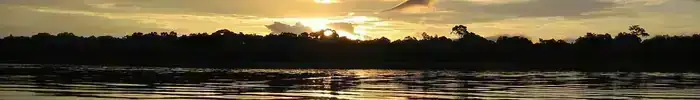
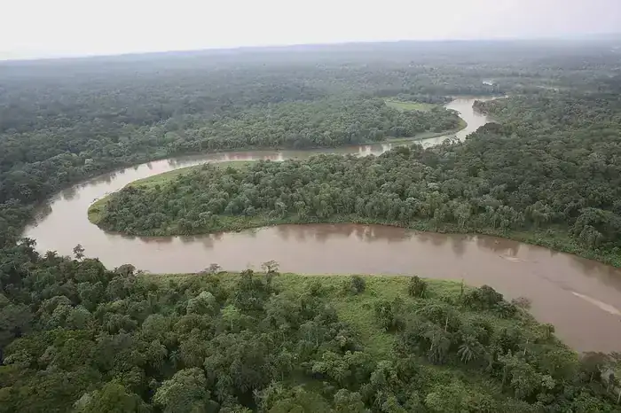
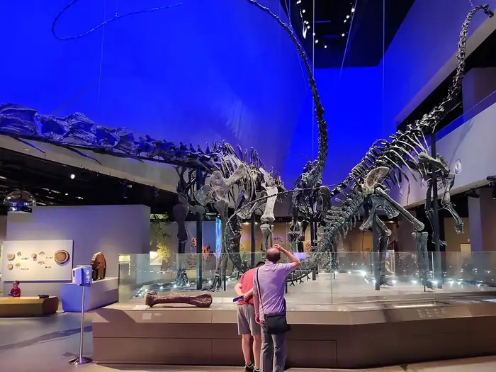

The reports
Mokele-mbembe appears in accounts from the Congo basin from the early twentieth century, notably after the 1909 Hagenbeck expedition. Descriptions vary: a large animal with a long neck, a hippo-sized body, said to live in rivers and swamps. Local traditions describe a being that is not necessarily a dinosaur.
Maps, diagrams and images






The expeditions
There have been many, including several in the 2000s and 2010s. None has produced a specimen, a photograph, a carcass or a clear track. The region's fauna is well documented by biologists working there, and a breeding population of large animals would leave droppings, trails and bones.
The strongest version of the claim relies on the forest's size, which is an argument from absence of survey rather than evidence of an animal.
Documented: the reports and the expeditions.
Documented: the region's known fauna.
Not found: any physical evidence.
Not plausible: a sauropod surviving 66 million years unnoticed.
The honest label: fringe.
Why it is in the archive
Because it is the cryptid most often tied to a specific extinct group, and because the century of searching is itself the evidence.
Open resources on this topic
- BookDesmistificando Mokele Mbembe (Internet Archive, free to read)
- BookDrums along the Congo : on the trail of Mokele-Mbembe, the last living dinosaur — Nugent, Rory · 1993 (Internet Archive, free to read)
- BookA Living Dinosaur? In Search of Mokele-mbembe — Roy P. Mackal · 1987 (Internet Archive, free to read)
- PapersOpen-access articles: DOAJ · PubMed Central · Internet Archive Scholar
- BooksPublic-domain and borrowable copies: Open Library · Project Gutenberg · Google Books
Cite this page
Momin, S. (2026). Mokele-mbembe. The Larger World Archive. https://drsamonline.github.io/LARGE_GLOBE/mokele-mbembe.htmlMomin, Sohil. “Mokele-mbembe.” The Larger World Archive, 2026, https://drsamonline.github.io/LARGE_GLOBE/mokele-mbembe.html.Momin, Sohil. “Mokele-mbembe.” The Larger World Archive, 2026. https://drsamonline.github.io/LARGE_GLOBE/mokele-mbembe.html.@misc{mokelembembe2026mokele,
author = {Momin, Sohil},
title = {Mokele-mbembe},
year = {2026},
howpublished = {The Larger World Archive},
url = {https://drsamonline.github.io/LARGE_GLOBE/mokele-mbembe.html},
note = {Last reviewed 20 November 2026}
}Last reviewed 20 November 2026 · Corrections policy · this page is not peer reviewed
Sources for this page
- Wikipedia, “Mokele-mbembe” — the reports and expeditionsen.wikipedia.org
- Wikipedia, “Cryptozoology” — the fielden.wikipedia.org
- Wikipedia, “Sauropoda” — the group it is compared toen.wikipedia.org
- Wikipedia, “Congo Basin” — the regionen.wikipedia.org